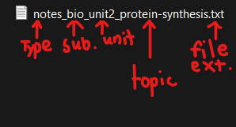
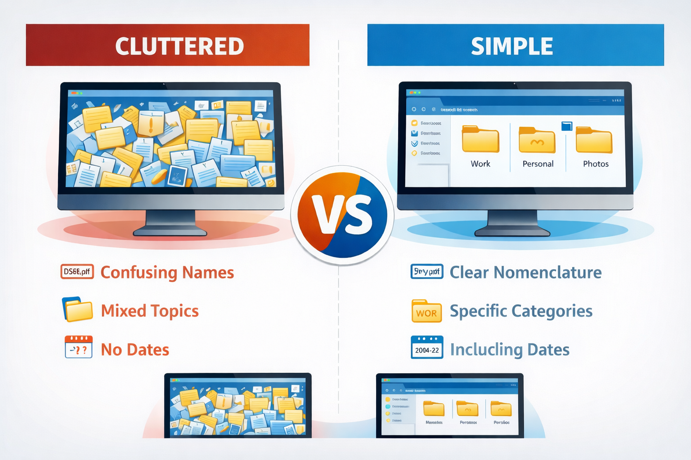

No single system suits everyone. Effective organisation adapts to workflow, academic demands, and personal habits. The key is consistency.
A personal system should be simple enough to maintain daily. Complexity may appear efficient initially but often collapses under inconsistency.
Periodic refinement ensures relevance. Systems should evolve gradually, not through constant drastic restructuring.

Minimalism vs Over-Organisation
Minimalism focuses on clarity and essential structure. Over-organisation creates excessive folders, redundant categories, and unnecessary segmentation.
The objective is strategic simplicity. Too little structure leads to chaos; too much leads to rigidity. A balanced approach supports adaptability while maintaining order.

Module Assessment
Question 1
Which is better?
Question 2
What is the main purpose of a personal file system?
Question 3
A student creates 20 nested folders for a simple subject. What problem might occur?
Question 4
What does digital minimalism in organisation encourage?
Question 5
You often work on the same subjects every week. What system would help?
Question 6
Why is consistency important in file organisation?
Question 7
A folder system worked last year but no longer matches your classes. What should you do?